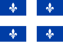
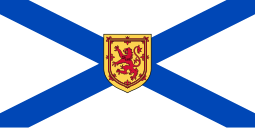
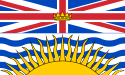

canada!
history
the first colony on canada was new france, with the first permanent settling happening in 1608 in quebec
but after the 7 years war it was given to britian who then made north and south canada for uhh some reason then rejoined together in 1841
then in 1867 it was joined with the colonies of new brunswick and nova scotia through confederation, forming self governing canada under the bri ish
then it slowly began accumilating new territory and finished at newfoundland and labardor
then in 1982 they removed all legal dependence on britian but had high autonomy before that
flag of canada 1957-1965 the last flag before independence
some of the provinces and territories
ontario, the most populos province and home to ottawa canadas capital

quebec, sort of the french part of canada they speak french and are culturally french too

nova scotia, the most poplated province in alantic canada

british columbia, im running out of ideas
half of this is propably wrong but i did my best on it